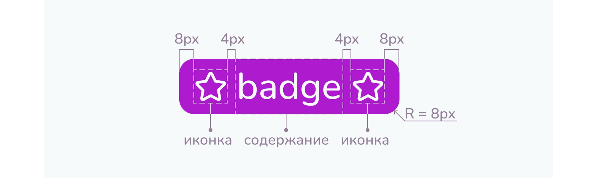

<body>
<pre><code class="language-html">...</code></pre>
</body>Бейджи
Бейджи используются для разделения однотипных элементов по свойству, например, разделение игр по необходимому количеству игроков в команде.
Спецификация
Цвет
С помощью цвета пользователю легче считывать бейджи. Поэтому для бейджей в рамках одного элемента необходимо использовать цвета в порядке: Brand 1, Brand 2, Brand 3, Brand. Основной брендовый цвет используется только при необходимости, чтобы максимально отличить бейджи как некликабельные элементы от интерактивных элементов страницы.
Размер и контейнер
Рекомендуется использовать размер Medium и отображать бейджи строкой. Размер Small используется только в случае, когда размер Medium слишком большой.
Содержание
Рекомендуется создавать бейджи не длиннее 19 символов. Лучше использовать слова или словосочетания и не использовать предложения, знаки препинания и названия компаний.
Вёрстка
Бейджи - это строковый элемент, поэтому они располагаются друг за другом и переносятся на следующую строку как текст. Они выравниваются по левому краю. Рекомендуется не использовать для одного элемента больше трёх бейджей.
Вертикальный и горизонтальный промежуток:
- 8px для Medium
- 4px для Small
Анатомия
.punctuation { color: black;}
.bracket { color: blue;}
.css .property { color:22px;}
.css .numerical { color:seagreen;}
.css .letter { color:cornflowerblue;}